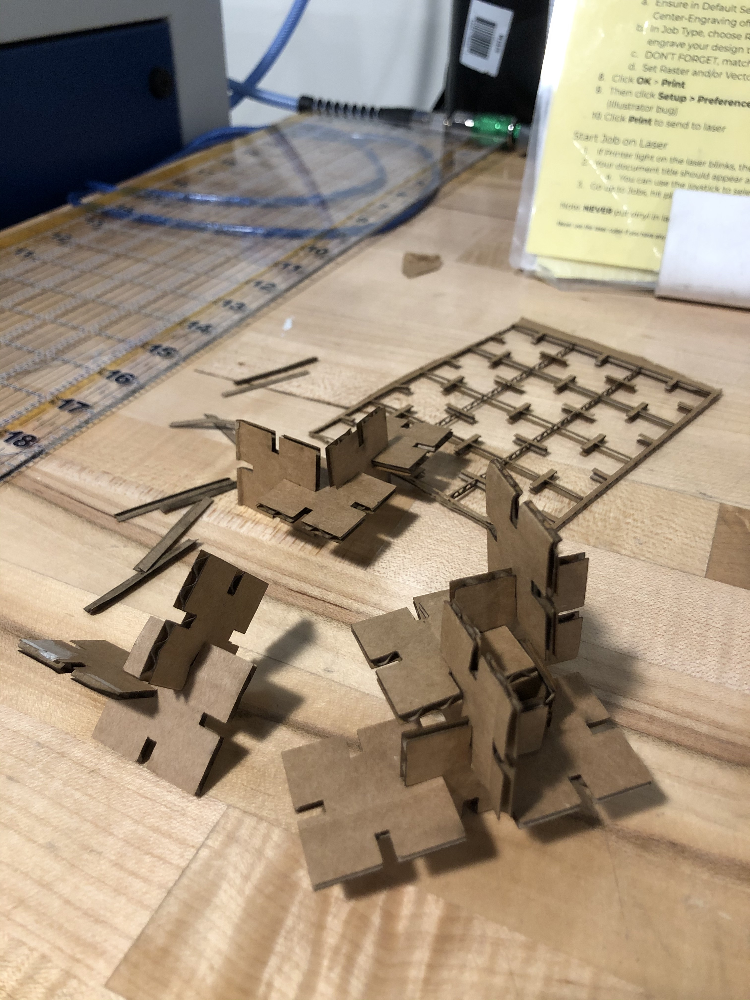
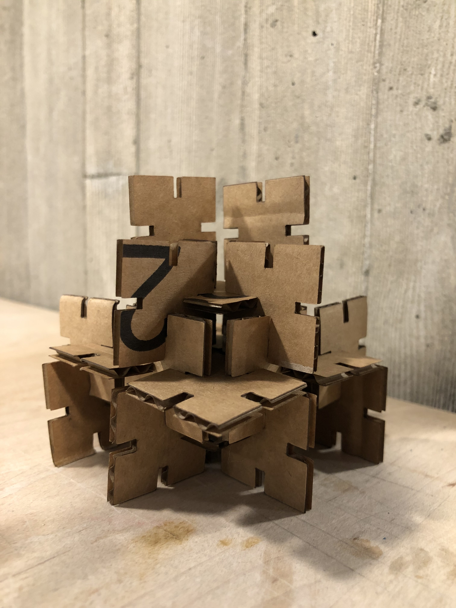

hello my first assignment is on modelling and laser cutting.
this was honestly pretty difficult since i didn't feel like i knew what i was doing with digital fabrication, so i started googling some previous assignments to see what others had done before and started brainstorming some potential patterns and designs that i could incorporate. something simple, nothing complex. i decided to start with basic shapes so i could understand the laser cutting process: circle, square, and triangle. sounds easy, right? i decided to start with a square to at least get my feet wet.
i started creating a square in rhino 7 with the help of TA junchao, and added some slots using polar array. here are the following steps i took to create this basic shape:

the calipher is critical to measuring the cardboard so i took advantage of the MILL / the 8's calipher to measure the cardboard that my friend graciously gifted me. i cut out a small cardboard to test, measured the dimensions (180mm x 200mm approximately) and used the calipher to find the thickness of the cardboard. i estimated it to be 2.65mm. i used that thickness to determine the width of the slot in rhino; however, i ran into the difficulty of making sure that it was actually the correct width when laser cut.
i then exported the rhino file as an adobe illustrator file, making sure to convert the millimeters to inches (1 mm = 0.03937 in). i measured the cardboard that i was using and adjusted the artboard to fit the cardboard width. i cut/pasted the same shape multiple times for the total of 30 shapes.
for laser cutting according to the MILL, my settings were:
 
[ RHINO FILE - TO BE MODELED ] | [ ADOBE ILLUSTRATOR FILE - TO BE LASER CUT]
thank you very much to mabel ho, my friend & neighbor, for gifting me extra cardboard so i could work on this project. thank you also to andy moon for the moral + academic support and the TA junchao for thoughtfully explaining how to use rhino. finally, shout out to the previous students and wonderful staff (bella!!!) at the MILL / the 8 for teaching me how to use illustrator and laser cutting. i asked a random design student (sophomore, intended interaction design major) named stephanie for help since she was using laser cutter and she helped me a lot.